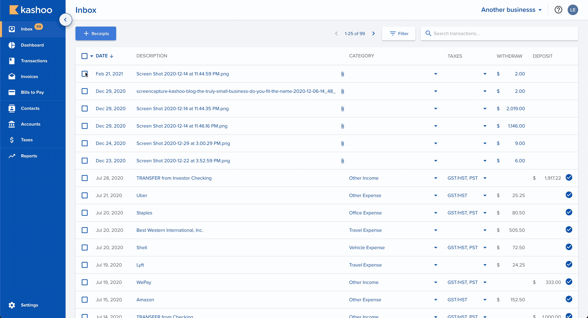
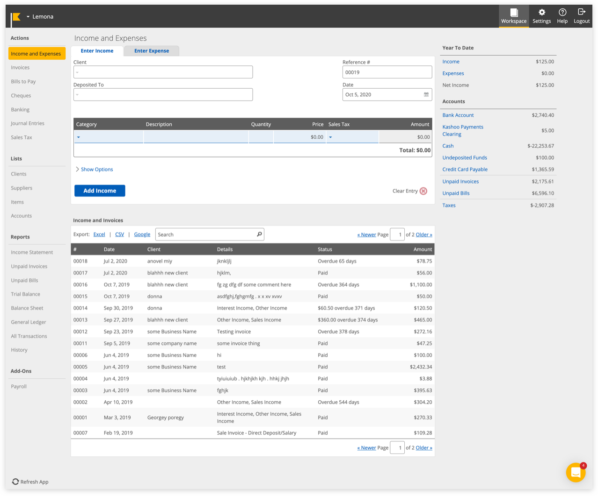
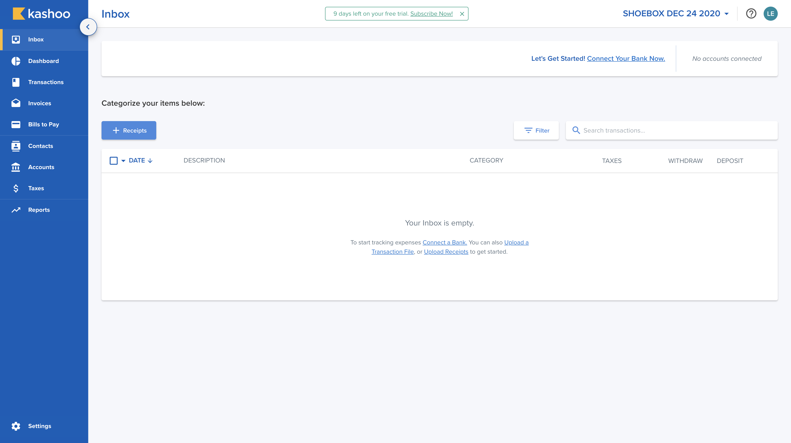

Kashoo 2.0 Web
Contractors, freelancers and digital professionals often struggle with overly complicated bookkeeping software. Kashoo 2.0 simplifies financial management by automating tedious data entry and tracking.
I designed and shipped the new end-to-end Kashoo 2.0 experience in November 2019 that increased subscribers by 22.8%, and driving over 1,000+ new users to the platform.

Problem Statement
The average small business owner spends 6.8 hours a week on their finances and even then, these small business owners may not be using the right tool. Small businesses often need different resources and tools than their medium-sized business counterparts to succeed.
Kashoo was built for exactly these types of business owners, but its legacy product was no longer keeping up with what they needed.
Legacy UI

User Feedback on Legacy UI (Kashoo Classic)
Prior to joining, the team had been gathering feedback from existing users through Intercom, surveys and cancellation forms on how to build a new and improved Kashoo 2.0 to better serve our truly small business owners.
“We switched to quickbooks. We needed much more in the way of reports and accessing information, this note applies to both of our accounts. The inability to see specific charges by account within a project when clicking on that charge was very frustrating.
The report options were silly, and lacked some basic reports needed for business. Quickbooks offers so much more. Sorry.”
“I wanted something that was easy to just track the transactions, categorize them, as well as potentially create Pro Forma statements for me based off my data. The main reason why I didn't like Kashoo was because data was not disclosed in REAL-TIME!!!”
“I recommend Kashoo to people all the time.... The only hesitation I sense from people I mention it to ask me why they should choose it over Quickbooks Online which is priced similarly and has the same or more features.”
“The site needs more color... expenses needs to be different from income. Some short cuts up top in the blue area, perhaps where you can choose your own short cuts for sections that you always go to. A quick pay button, where you can choose your favorite account.... Right now it takes 5 clicks to do so, if you want to quick pay a few things without going to the check printing section, you are stuck clicking away.”
Overview
Kashoo 2.0 leverages machine learning and OCR to automatically categorize transactions, match receipts from the Inbox, and generate real-time financial reports in a single click. By automating reconciliation, it eliminates manual entry errors and significantly reduces time spent on accounting.
Impact
- 4× more likely to subscribe after the onboarding redesign
- 22.8% subscriber growth after launch
- 1,000+ new users on the platform
Modernized a complex legacy accounting system into an intuitive, powerful web platform for freelancers and sole proprietors.
Redesigned core interaction models like the Inbox and data tables to reduce clutter and streamline daily bookkeeping.
Key Design Decisions
Initially, I was tasked with a visual UI refresh, however after analyzing Kashoo Classic, I knew aesthetics alone would solve the core usability challenges. I re-mapped the user journey from an experienced user's perspective to deliver an intuitive, functionally clear experience alongside a modern look.
Here are key design decisions that drove the UX and UI improvements in Kashoo 2.0:
First Time Users / Inbox

We know that not all users tend to connect their banks to system until they trust the system enough. With Kashoo, users aren’t needed to connect their banks to the system. However do recommend users to connect their bank for a quicker and accurate process. Also, from our analytics, we learned that when a user connects their bank to the system, they are 4x more likely to subscribe.
As the Inbox page is the first impression to users, I needed to make sure that in all scenarios whether a user connects a bank or not knows what to do without it being to overwhelming.
Dashboard
The primary issue with this page was that it didn't feel on-brand. To improve visual accessibility, I specifically chose colors with enough contrast for visually impaired users. While I initially considered a wider range of distinct colors, I ultimately settled on a palette of soft blues and purples. This provided the ideal balance—ensuring elements remained distinguishable without feeling overly jarring or blending together.
Bulk Editing
When a user selects multiple like items, they can edit the items as a a group instead of going to each individual item to make changes.
Modals
The Editor modale was another big task for me to tackle when I first joined the team. For the redesign, I decided to give all modals a clear header. I also changed the layout with a split view, one side for editing and the other for reading the totals.
The layout was inspired by the ecommerce checkout layout where everything on the left is the details about the item while the right side is the total calculations.
Just like the Inbox inline editing, if the input box is gray, they can’t change it. If it’s blue it’s editable The types can be changed easily on the top - inspired by Google Calendar in selecting the type of “event” it is. For selecting Tax, I chose to phrase it as a question rather having the user try to guess through a +/- sign. When the user has multiple items in a single receipt, this is referred to as “Splitting a transaction” or “Adding a line item”. When the user presses the link below, the existing item is formed into an “item” on the right. The user can edit the item by selecting the box itself.
Inline Editing
A simple experience that many expect but not always there is the ability to do inline editing. There is a differentiator between what can be edited (manual input) versus what cannot be in gray (from the connected bank).
Invoices
For the Invoices and Bills to Pay pages, I initially planned to use the same modal layout as the main editor in the Inbox. However, after discussing it with the team and the product manager, we decided to differentiate the design. Since these pages need to feature a table listing all sent invoices, keeping the exact same layout risked confusing users. (A problem we saw in Kashoo Classic)
Reports
For the reports, I got my hands dirty with code and handled the styling for the report displays. The new design creates a clearer distinction between the report itself and the interactive elements. We also addressed key feedback from Kashoo Classic users by adding dynamic date range selectors such as 'Current Fiscal Year' and 'Last Fiscal Quarter', which are crucial since fiscal dates vary from business to business.
User Feedback on Kashoo 2.0
“As mentioned, I do like the overall features and interface a lot, the program uses restrictions that effectively guide clients towards doing more accurate book keeping and keeps them on the right track away from making mistakes.”
“As far as I can tell on Kashoo2.0 there is no feature to import a chart of accounts, which is unfortunately a big issue in setting it up agriculture clients as the only option is to manually set up each individual account, and may even end up being a deal breaker for most of these types of clients.”
“I loved the Kashoo interface! Way better than Quickbooks. Customer service through CHAT is AWESOME!”
“This is really easy to use! I tried FreshBooks and it was less easy to use. Specifically, in Kashoo your application lets me quickly add/subtract accounts to match my schedule C categories. This is great app for the Schedule C.”
“We are a small Community Interest Company run totally by volunteers and for us most of the functionality that we need is there. The interface is friendly and fairly easy for someone with dyslexia to use.”
“I appreciate the effort to make a layer that is simple and accessible, but I was surprised that there was not more access to the underlying structure.
Useful for those who don't care about accounting. Impossible for those who do...”
Reflection
Looking back at Kashoo 2.0 with the experience I've gained since, a few things I'd change would be:
- Import: Adding the ability for users to import their expense gives users an alternate way to add past transations in without needing to strictly connect to the bank or add manually.
- Duplicate detection & automated rules: Introduce a feature that checks for duplicates, allows users to create custom automation rules for frequent tasks, and proactively suggests rules based on detected patterns.
- Seamless AI integration: Integrate smarter AI technology into the system without making it feel overwhelming or intrusive ("too in-your-face").
- Accountant handoff feature: Add an "accountant handoff" workflow to streamline tax preparation for small business owners.
While we significantly improved user experience over Kashoo Classic (v1.0), by leveraging modern AI, we can automate tedious tasks like highlighting transaction trends, flagging anomalies, and suggesting profit-maximizing adjustments. Business owners can actually focus on growth and their daily lives.
Additionally, an "accountant handoff" feature (providing a checklist or complete document export) would streamline tax prep and solve a major friction point for users sending records to their accountants.